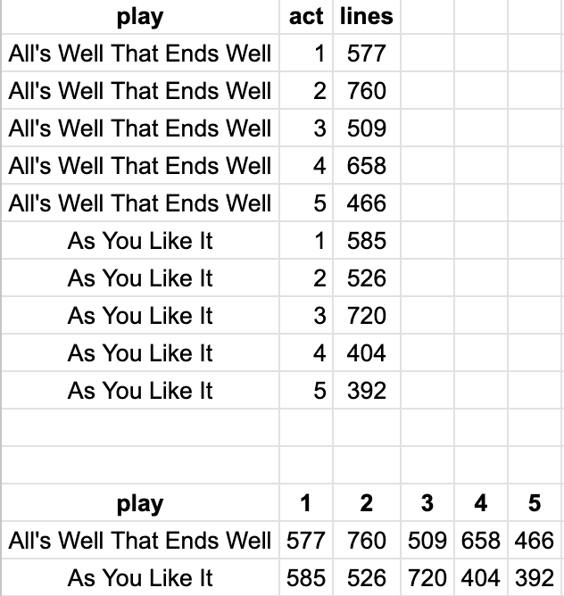

The second exam is similar to the first, with a total of 10 questions. You will have the whole class period to finish them but should not need more than 30 minutes. All of the questions will refer to six datasets that I will give you the first few rows of. As with the first, this exam contains several questions about being able to write short Python code related to what we are doing in class. There are six questions that require writing some code. There will not be any coding related to bin, qbin, melt, or pivot.
There are also five conceptional questions:
I teach two sections back-to-back of this course in the same room. If you have a DAN for extra time, you are more than welcome to stay late (first section) or come early (second section). If those don't work for you or you have other accomodations that we can't meet in the classroom, please just book a time in the testing center and I will send the exam over.
All of the questions refer to the datasets in notebook04d.
1. Draw a plot with year post quem on the x-axis and year ante quem on the y-axis. Points colored by genre and size equal to 4.
(
ggplot(plays, aes("year_post_quem", "year_ante_quem"))
+ geom_point(aes(color = "genre"), size = 4)
)
2. Select only the comedy plays and compute the difference between year ante quem and year post quem.
(
plays
.query("genre == 'comedy'")
.eval("diff = year_ante_quem - year_post_quem")
)
3. Group by the genre. Compute the number of plays and the mean year post quem for each genre.
(
plays
.groupby("genre")
.agg(
year = ("year_post_quem", "mean"),
count = ("play", "count")
)
.reset_index() # optional here, but a good idea
)
4. Merge the lines dataset with the plays dataset on the key play.
(
lines
.merge(plays, on="play")
)
5. Assume that the "play" variable in lines was called "title" instead. Redo the last question.
(
lines
.merge(plays, left_on="title", right_on="play")
)
6. Identify (at least one) primary key in the example tables.
7. See above. No longer going to ask this question because it's conceptually easy but difficult to know how to write the answer properly.
8. Identify the units of observation in the example tables. Note that there is sometimes some subjectivity with units of observation but the exam examples should be very clear.
9. Perform a manual pivot of a table on "act". In other words, make the new dataset have play as the unit of observation. (Answer is below, with the starting table on top and the pivoted table on the bottom)

10. Make sure you could do the previous question the other way around, starting with the bottom table and moving to the top one.